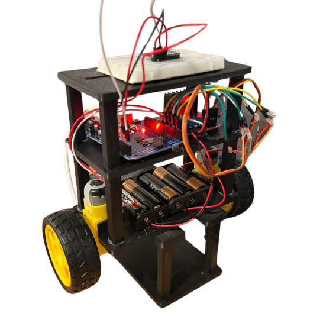
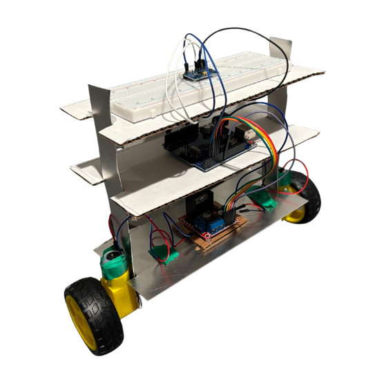
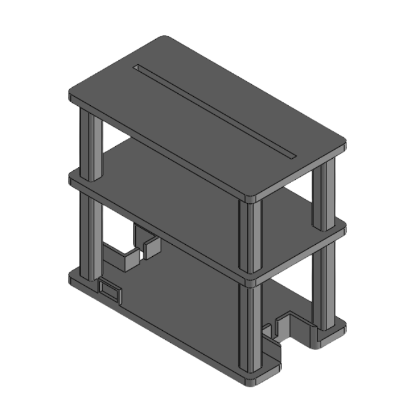

Self-Balancing Robot
A two-wheel robot that holds itself upright. It reads its own tilt and drives the wheels to catch the fall, with the sensor code and the balance loop written from scratch rather than pulled from a library.



Overview
What it is
- A two-wheel robot with its mass well above the axle, so standing still is an active job rather than a resting state. Left alone it falls over.
- An MPU6050 gyro and accelerometer measures how far it's tipping. An Arduino Uno turns that into a correction and drives two TT gear motors through an L298N driver.
- The wheels have to drive toward the direction it's falling to get back under the centre of mass, which is the part that feels backwards until you watch it work.
- I wrote the logic by hand and deliberately avoided the usual libraries. Dropping in someone's MPU6050 library gets you an angle in an afternoon, but you learn nothing about where that number came from.
- So I talked to the sensor directly: wake it out of sleep mode, set its ranges, then read the measurement registers myself over I2C.
- Each axis arrives as two bytes in two separate registers. You read the high byte and the low byte, shift the high byte up eight bits and OR the low one in to rebuild the signed 16-bit reading, then divide by the scale factor for the range you picked to get real units.
- Doing it the long way is what made the sensor stop being a black box. The balance loop on top of it is mine too, so when it wobbled I knew which part to go fix.
- The first version was a prototype I made in my dorm room out of spare sheet metal, cardboard and tape, just to validate the shape and the layout before committing to anything.
- The second is a three-deck chassis I modelled in CAD and 3D printed, stacking the motors and battery low and the controller above them.
- Stacking matters more than it looks. Where the battery sits changes the centre of mass, and the centre of mass is what the whole balancing problem is about.